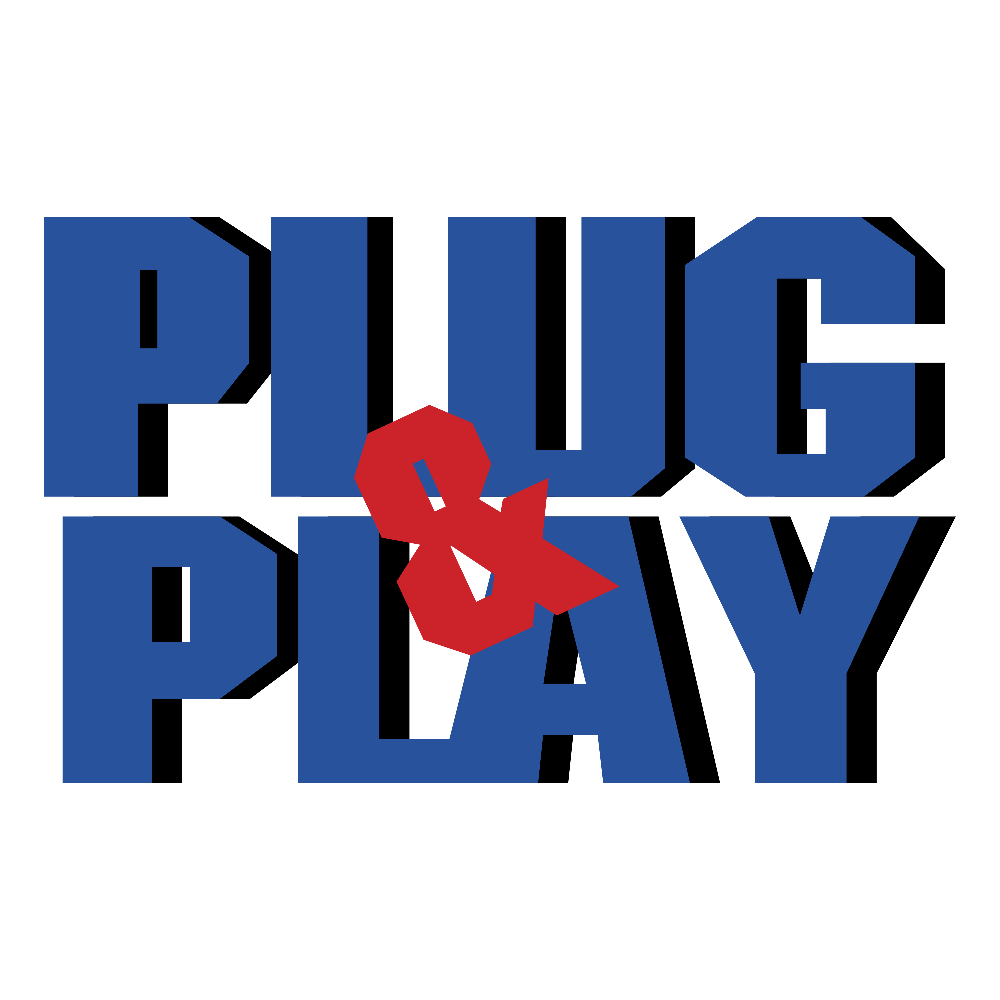

Plug and Play (v překladu „připoj a hraj“) je počítačová technologie umožňující jednodušší rozpoznávání a konfigurace hardware.
Umožňuje operačním systémům správně zjistit, jaký hardware je v počítači, na základě čehož může automaticky (s větší či menší úspěšností) k tomuto hardware nainstalovat či spustit příslušné ovladače a automaticky nastavit číslo přerušení, I/O adresu, rozsahy sdílené paměti, případně další skutečnosti (např. detaily o typu zařízení).
